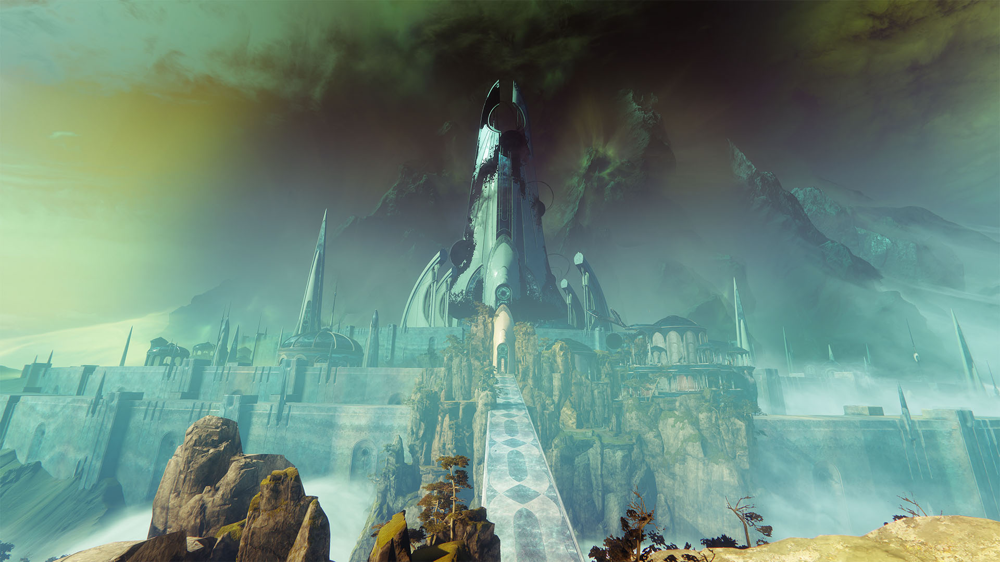

마지막 소원
데스티니 가디언즈의 2년차 확장팩 포세이큰에서 추가된 레이드로, 2018년 9월 14일에 출시되었다.
마라 소프 여왕이 세운 꿈의 도시에서 벌어지는 레이드로, 주적은 굴복자.
단, 최종 보스는 아함카라라는 종족으로 알려진 천의 목소리를 내는 리븐이다.
출시 당시에는 요구 전투력이 강장과 태초 엔그램을 아무리 먹어도 도달하기 힘들 만큼 굉장히 높았다.
이 점이 상술한 높은 난이도와 시너지 효과를 일으켜 최초 클리어의 기록이 무려 19시간으로 대단히 늦게 나왔으며 단 두 팀만이 데이원에 성공했다.
최초 클리어의 주인공은 별의 탑을 최초로 클리어한 Gladd의 Redeem 팀. 참고로 3위 팀은 데스티니 가이드 영상으로 유명한 Datto의 Math Class 클랜인데,
모르게스까지는 선두를 달렸으나 전진로 금고에서 공략법 파악 실패로 역전당하더니 급기야 리븐에서 클랜원끼리 불화가 터지는 등 고생 끝에 24시간 2분 만에 클리어하여 간발의 차이로 데이원 클리어에 실패했다.
